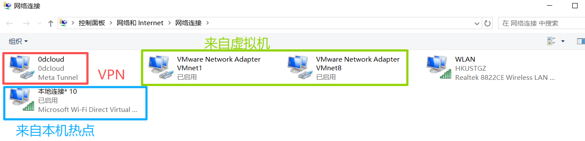

背景
实在是受不了 Windows 11 狗屎一般的操作了。比如莫名其妙的刷新要在鼠标的二级扩展菜单，搜索功能和屎一样，莫名奇妙的图标比例，等等。于是准备将系统换成 Linux，Ubuntu 24.04。
注意：下载的时候在官网要下载 desktop 版本，不然下下来的版本就只有命令行没有 GUI（图形化操作界面）。
换完之后有一种我也是电脑高手了的错觉 lol。
问题：VPN 在 Linux 下的登录死循环
第一个问题来了，我原来使用的 VPN 是 0dcloud，但是不支持 Linux 系统。于是我转向国际生同学推荐的 ProtonVPN，但是最操蛋的是，登录的时候需要连接外网，但是我不登录我又没法开 VPN 连接外网，陷入死循环。
省流就是，问 ChatGPT。 其他几个 AI 给的方案都在绕圈子而且不管用（Kimi，Grok 等），什么 OpenVPN 和 WireGuard 架构啊。甚至和我说要设备连接同一个局域网来获取稳定的 IP，但是我们学校的校园网的链接指南也没有链接 Linux 的教程，只有连 macOS 的，你可是一个科技大学啊，コラ！
因为默认开热点的时候，流量不会主动地从 VPN 那里过，需要额外设置，手机开通这个设置需要 Root。
解决方案：Windows 热点共享 VPN 给 Ubuntu
步骤一：开启 Windows 移动热点
首先 Windows 10 打开 设置 → 网络和 Internet →（左边栏）移动热点，打开移动热点。
步骤二：打开网络连接面板
Windows 系统的话，先 cmd 打开终端，输入 ncpa.cpl（ncpa = Network Connections Panel Applet，cpl = control panel）打开网络连接面板。
类似的还有：
control— 控制面板firewall.cpl— 防火墙appwiz.cpl— 程序和功能（用来卸载软件）
步骤三：共享 VPN 网络
打开 VPN 后，会显示一个额外的接口，比如我这里显示的就是 0dcloud Meta Tunnel。

右键打开，设置 属性 → 共享：
- 勾选 "允许其他网络用户通过此计算机的 Internet 连接来连接 (N)" 复选框
- 在 "家庭网络连接" 下拉菜单中，选择 本地连接*10（Local Connect * 10）
步骤四：连接热点
那么主机的网络设置就完成了。
最后用从机（Ubuntu 机）连接主机的热点，就可以正常使用主机的 VPN 了。